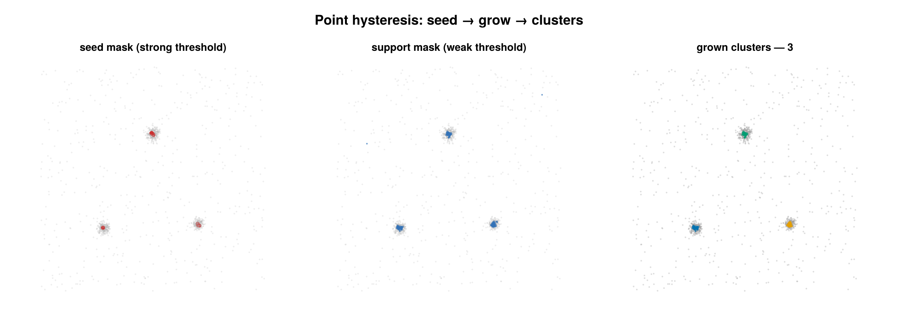

Point hysteresis
A cluster labeling backend selected by PointHysteresisConfig. It performs seed-and-grow connected-component labeling on a k-nearest-neighbour point graph: high-confidence seed points anchor components, the traversal grows through lower-confidence support points, and any component without a seed — or smaller than min_points — is dropped to noise. The two confidence levels (seed and support) are supplied as per-emitter boolean masks; they are the "strong" and "weak" arms of a density hysteresis computed outside the backend (typically from LocalContrastFeature).

Hysteresis seed-and-grow: a few high-confidence seed points (left) grow through the lower-threshold support set (middle) into the final clusters (right). Seed and support masks here come from LocalContrastFeature.
Concept
A single density cutoff forces one compromise everywhere: set it high and you fragment real clusters wherever the density dips; set it low and you bleed noise into the foreground. Hysteresis uses two cutoffs instead of one. A strong (seed) threshold marks only the points you are confident belong to a structure; a weaker (support) threshold marks every plausible foreground point. Clusters are then seeded at the strong points and grown outward into adjacent support points, stopping where the support mask stops.
This reduces both failure modes at once:
- Under-segmentation is curbed because a component is only emitted if it actually contains seed evidence — a diffuse blob of weak points with no strong core is discarded rather than merged in.
- Over-segmentation is curbed because growth crosses the weaker support threshold, so a real cluster whose periphery thins out is still connected through its support shell instead of splintering at the seed cutoff.
Because the strong evidence only gates a component (it does not flood from a bad emission model), a poorly calibrated mask yields fewer seeds — not a runaway merge. This is the explicit, discrete counterpart to the GMM+Potts MRF backend (MRFDensityClusterConfig), where the density/prior coupling is implicit and iterative.
How it works
The backend is feature-agnostic: it consumes two boolean masks and a graph parameter. The masks are produced upstream by thresholding a density feature. The reference feature is LocalContrastFeature, which gives each emitter a fine-scale kNN log-density and a local-contrast value:
\[f_i = \log\!\left(\frac{k_d}{\pi\, r_{k_d}^2}\right), \qquad c_i = f_i - \operatorname{median}_{\,j \in \mathcal{N}_{k_b}(i)} f_j ,\]
where $r_{k_d}$ is the distance to emitter $i$'s $k_d$-th neighbour and $\mathcal{N}_{k_b}(i)$ is its $k_b$-nearest-neighbour set. The caller turns these into the two masks with a strong and a weak threshold, e.g. seeds at high contrast and support at a looser contrast, both above a density floor. The seed mask must be a subset of the support mask (every seed is also a support point); a violation raises ArgumentError.
Given masks $S$ (seed) and $U$ (support) with $S \subseteq U$, the backend builds a directed kNN graph over the emitter coordinates and labels the support subgraph:
Graph. Build a
KDTreeover the coordinates (2D(x, y), or(x, y, z)whenuse_3d). For the current group of $n$ points, use degree $k = \min(\texttt{graph\_k},\, n-1)$. There is a directed edge $i \to j$ when $j$ is among the $k$ nearest neighbours of $i$ (self excluded). The graph is asymmetric: $i \to j$ does not imply $j \to i$.Seed-and-grow. Iterate emitters in input order. At each unvisited support point, start a stack-based graph traversal (a flood) that follows kNN edges but only ever steps onto support points:
\[C = \{\, v : v \text{ reachable from the start through support points along } i\to j \text{ edges} \,\}.\]
Every reached node is marked visited, so each support point lands in exactly one component. Points outside $U$ are never entered and act as barriers.
Keep rule. After a component $C$ is closed, it becomes a cluster iff it contains seed evidence and is large enough:
\[\text{keep } C \iff \bigl(C \cap S \neq \varnothing\bigr)\ \wedge\ \bigl(\lvert C\rvert \ge \texttt{min\_points}\bigr).\]
Kept components receive a fresh cluster id ($1, 2, \dots$ within the group); everything else — support components with no seed, undersized components, and all non-support points — stays at
id = 0(noise).
The traversal stops when no support point reachable from the seeded region remains unvisited. Note the asymmetric-kNN consequence: with graph_k much smaller than the cluster size, a true-but-outlying support point may have no incoming edge from the component and remain unreachable; raising graph_k makes the graph denser and the growth more inclusive.
Configuration
PointHysteresisConfig holds only the reusable knobs; the per-cell seed and support masks are required keyword arguments to cluster, not config fields (the same config instance is meant to be reused across many SMLDs).
| field | default | unit | meaning |
|---|---|---|---|
graph_k | 12 | — | degree of the kNN graph used for the grow traversal (clamped to n-1 per group) |
min_points | 100 | localizations | minimum component size for a cluster to be kept; smaller components → noise |
use_3d | false | — | build the kNN graph in (x, y, z); requires 3D emitters (e.g. Emitter3DFit) |
per_dataset | false | — | cluster within each dataset independently; ids are local, so (dataset, id) is unique |
remove_unclustered | false | — | drop emitters with id = 0 from the returned SMLD |
Required keyword arguments to cluster(smld, cfg; seed, support):
| keyword | type | meaning |
|---|---|---|
seed | AbstractVector{Bool} | high-confidence foreground; length must equal length(smld.emitters). A component must contain ≥1 to be kept |
support | AbstractVector{Bool} | candidate foreground (same length). Growth only crosses support points. Must be a superset of seed |
Validation at dispatch entry: seed/support lengths must match the emitter count, graph_k ≥ 1, min_points ≥ 1, and seed[i] ⟹ support[i] for every emitter — each violation raises ArgumentError.
using SMLMClustering
using Statistics # for `quantile`
# 1. Per-cell density feature → fine log-density + local contrast.
(_, info_f) = cluster_statistics(smld,
LocalContrastFeature(density_k = 200, background_k = 2000))
contrast = info_f.extras[:contrast_per_emitter]
fine = info_f.extras[:log_density_per_emitter]
# 2. Two thresholds on the same feature → the hysteresis arms.
fine_floor = quantile(filter(isfinite, fine), 0.35)
seed = isfinite.(contrast) .& isfinite.(fine) .& (contrast .> 0.25) .& (fine .> fine_floor)
support = isfinite.(contrast) .& isfinite.(fine) .& (contrast .> -0.05) .& (fine .> fine_floor)
# 3. Seed-and-grow on the kNN graph.
cfg = PointHysteresisConfig(graph_k = 12, min_points = 150)
(smld_out, info) = cluster(smld, cfg; seed = seed, support = support)
println(info) # ClusterInfo(.../... clustered, K clusters, algorithm=:point_hysteresis, ... ms)Output & interpretation
cluster returns (smld_out, info::ClusterInfo).
smld_outis a deep copy of the input SMLD; the input is never mutated. All inputids are zeroed before traversal (prior labels never leak), and cluster labels are written onto the copy'semitter.id:0= noise,1..K= clusters. Withremove_unclustered = true,id = 0emitters are dropped fromsmld_out; otherwise every input emitter is present with its assigned id.info::ClusterInfocarries:field meaning n_locs_ininput localization count n_clusteredemitters assigned to a cluster ( id > 0)n_noiseemitters left as noise ( n_locs_in - n_clustered)n_clustersnumber of clusters formed cluster_sizessize of each kept component, in the order components were emitted algorithmthe Symbol :point_hysteresiselapsed_swall-clock time of the clustercall, in seconds
There is no extras field on ClusterInfo; the masks and any density feature remain the caller's to keep. With per_dataset = false (default, a single pooled group) cluster ids run 1..K and cluster_sizes[k] is the size of cluster k. With per_dataset = true, ids restart at 1 within each dataset (so (dataset, id) is the unique key) while cluster_sizes is appended across groups in iteration order — its index no longer equals a global cluster id.
Notes & caveats
- 2D and 3D. Both are supported via
use_3d. Withuse_3d = falsethe graph is built on(x, y); withuse_3d = trueit is built on(x, y, z)and the emitters must expose azproperty (e.g.Emitter3DFit), otherwise coordinate extraction errors out. - Coordinates / scaling. Distances are computed directly in the emitters' stored coordinate units (µm) with no per-axis scaling, so
x,y(andz) must be on a common physical scale for the kNN graph to be meaningful. min_points. Applied twice: a whole group withn < min_pointsis skipped before any traversal, and each individual component with|C| < min_pointsis dropped to noise. It is the same threshold as the sharedmin_pointscontract across the clustering backends.- Group skip. A group is also skipped when
min(graph_k, n-1) < 1(i.e.n ≤ 1), so a degenerate group never forms a cluster. - Asymmetric-kNN reachability. Because edges are directed (current node's kNN), tight clusters with
graph_k ≪ Ncan leave peripheral support points unreachable; prefer a largergraph_kat smallNif growth looks clipped. - Mask provenance. The hysteresis quality is entirely in how
seedandsupportare derived; this backend only enforcesseed ⊆ supportand the graph/keep rules. Choosing the feature and the two thresholds is the caller's responsibility (seeLocalContrastFeaturefor the reference recipe).